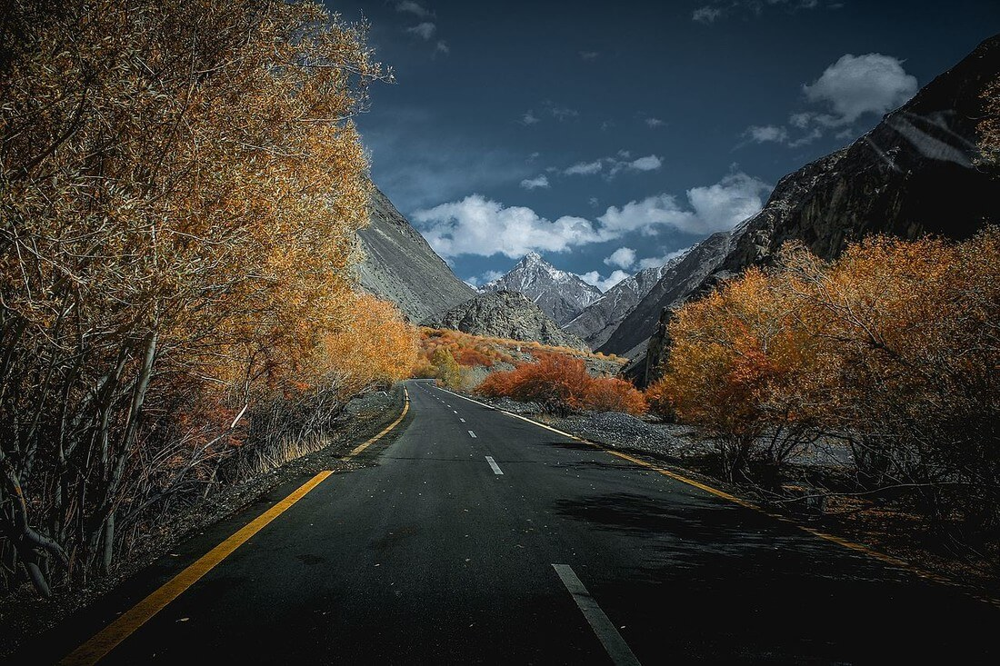
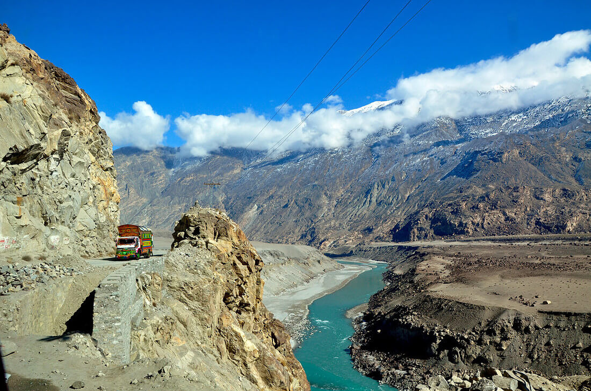

Каракорумская магистраль является одной из самых высокогорных и опасных в мире, она проходит по территории двух государств – Китая и Пакистана. Участок шоссе, проходящий по территории Китая, уже давно стал постоянным участником сводок о страшных авариях со смертельным исходом. В данном случае никаких мистических особенностей трасса не имеет, она действительно очень сложная и местами невероятно узкая, а осложняют ситуацию на дороге частые ливневые дожди.
Его называют восьмым чудом света. За этим потрепанным ярлыком скрывается на самом деле выдающееся инженерное сооружение, в очередной раз доказавшее, что нет пределов человеческим возможностям. Всего за 10 лет ценою сотен жизней строители двух стран, бывших полными противоположностями друг друга, сделали, казалось, немыслимое: сквозь недоступный прежде край, через высочайшие горы мира, на склонах которых раньше бродили лишь косматые яки, прошло настоящее международное шоссе, забравшееся в итоге на рекордную высоту в 4700 метров над уровнем моря.
Каракорумская магистраль в Китае не раз становилась на пути сильных оползней, которые разрушали части дороги, поэтому сегодня некоторые участки трассы не имеют покрытия, а условным ограждением на них служат каменные насыпи. Помимо автомобилистов на горной дороге можно встретить мотоциклистов и даже велосипедистов, которые тоже нередко становятся участниками и виновниками дорожно-транспортных происшествий.
Общая протяженность шоссе составляет 1 300 км, его строительство началось в 1966 году и длилось 20 лет. Если верить историкам, то значительная часть дороги в точности совпадает с маршрутом Великого шелкового пути, поэтому Каракорумское шоссе является для местных жителей очень значимым национальным символом.
Омрачает важный статус дороги статистика аварийных ситуаций, многие связывают ее с историей строительства шоссе. За 20 лет во время строительных работ погибло немногим менее 1 000 рабочих, жизни которых оборвали лавины, оползни и несчастные случаи. Реалисты связывают повышенную аварийность с плохой устойчивостью водителей к горной болезни, живописное Каракорумское шоссе заставляет автолюбителей всегда быть во внимании.

К началу 2010-х Каракорумское шоссе фактически пришло в негодность. Одновременно все больше углублялось сотрудничество Китая и Пакистана, и состояние трассы перестало удовлетворять его уровню. Некогда обе страны придавали ей стратегическое значение, а индийские эксперты изучали спутниковые снимки мостов и пытались определить, проедут ли по ним танки. В XXI веке КНР помирилась с Индией, убавилась и острота индо-пакистанских отношений, но новой движущей силой стала не опасность войны, а экономика.

В начале 2010-х на китайские кредиты и с помощью китайской же рабочей силы шоссе принципиально реконструировали. Масштабные работы на всей протяженности дороги привели к тому, что сейчас она действительно напоминает современную трассу с отличным асфальтом, а не однополосную полугрунтовку с постоянным риском падения в пропасть километровой глубины. Были построены новые мосты, новые тоннели, на ряде участков ширина шоссе увеличена до четырех полос. Уникальный проект получил совершенно новый смысл, но главное даже не в тех дополнительных миллиардах товарооборота, которые принес апгрейд трассы.
ВВЕРХ